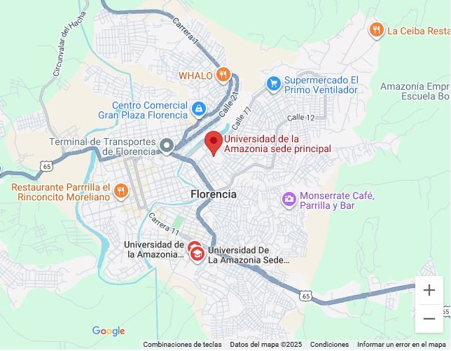

Semestre I18 créditos
- Comunicación2
- Deporte y Cultura2
- Matemáticas I3
- Física I3
- Biología General3
- Introducción a la Ingeniería2
- Lógica y Algoritmos I3
Inicio / Programas / Pregrado / Ingeniería / Ingeniería de Sistemas

Ingeniero de Sistemas
Presencial
Diurna
10 semestres
178
52384
Florencia, Caquetá. Campus Florencia
Socio-HumanísticaCiencias BásicasBásica de IngenieríaIngeniería AplicadaOpción de grado
Las electivas son de profundización y fortalecen las competencias transversales y específicas del Ingeniero de Sistemas; se ofertan cada semestre. La opción de grado se rige por el Acuerdo 019 de 2019 del Consejo Superior o la norma institucional que haga sus veces. Fuente oficial: Acuerdo 44 de 2020.
Acuerdo 44 del 02 de diciembre de 2020 - Por el cual se aprueba el nuevo plan de estudios y el plan de transición del programa académico de Ingeniería de Sistemas.
Mira la malla semestre por semestre en la sección Plan de estudios.
Coordinadora de programa: Paula Andrea Chica Murcia.
Teléfono: 320 454 1936.
Correo electrónico: pisistemas@uniamazonia.edu.co
Ubicación: Florencia, Caquetá. Campus Florencia, barrio El Porvenir, bloque administrativo, primer piso.
